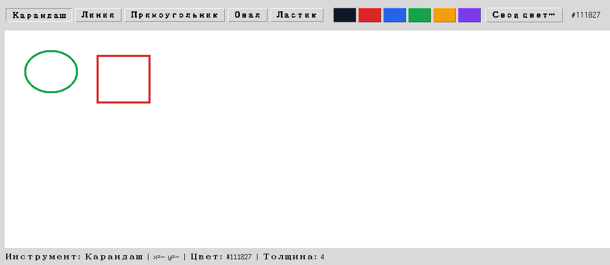

Сохранение и загрузка JSON
Сохраняется не картинка, а документ фигур — Canvas умеет заново построить из него холст в любой момент.
Canvas не сохраняет рисунок как файл — документ сохраняет
Важная честная оговорка: Canvas сам по себе не умеет
экспортировать себя в обычный PNG или JPEG — надёжный кроссплатформенный растровый экспорт
требует дополнительных зависимостей и выходит за рамки этой главы. Вместо этого мы сохраняем
ДОКУМЕНТ — список фигур, из которого Canvas и так строится через
render_document() (раздел 18.29):
{
"version": 1,
"canvas": {"background": "#ffffff"},
"items": [
{
"kind": "line",
"coords": [34, 52, 180, 90],
"color": "#2563eb",
"width": 4
},
{
"kind": "rectangle",
"coords": [80, 120, 220, 210],
"color": "#dc2626",
"width": 3
}
]
}
def save_document(self):
path_str = filedialog.asksaveasfilename(
defaultextension=".json", filetypes=[("Рисунок JSON", "*.json")]
)
if not path_str: # пользователь нажал "Отмена" — path_str == ""
return
data = {
"version": 1,
"canvas": {"background": CANVAS_BG},
"items": [shape.to_dict() for shape in self.document],
}
Path(path_str).write_text(json.dumps(data, ensure_ascii=False, indent=2), encoding="utf-8")

asksaveasfilename(), и askopenfilename() возвращают пустую строку "", если пользователь нажал «Отмена» — не None и не бросают исключение. Код обязан проверить это ДО того, как передавать путь в Path(...): Path("") — валидный, но бессмысленный объект, указывающий на текущую директорию, а не на файл, который выбрал пользователь.А если файл повреждён?
Открывает файл пользователь — значит, выбрать он может что угодно: чужой JSON, картинку,
недописанный при сбое файл, отредактированный вручную рисунок с опечаткой. Глава 15
(раздел 15.25) уже показывала, что json.load() сообщает об этом
через json.JSONDecodeError. Здесь к нему добавляются ещё
несколько возможностей: ключа "items" может не быть вовсе, у
фигуры может не хватать поля, а цвет может оказаться строкой, которой Tk не знает.
Важно не просто «не упасть», а не потерять рисунок, над которым пользователь уже работал. Поэтому загрузка разбирает файл в локальный список и заменяет документ только тогда, когда разбор целиком удался:
def load_from_path(self, path):
try:
data = json.loads(path.read_text(encoding="utf-8"))
shapes = [Shape.from_dict(item) for item in data["items"]]
for shape in shapes:
self.canvas.winfo_rgb(shape.color) # цвет существует?
except json.JSONDecodeError as exc:
messagebox.showerror("Не удалось открыть файл", f"Это не корректный JSON.\n{exc}")
return
except (KeyError, TypeError, ValueError, tk.TclError) as exc:
messagebox.showerror("Не удалось открыть файл", f"Это не сохранённый рисунок.\n{exc}")
return
# Разбор удался — только теперь меняем состояние приложения.
self.document = shapes
self.undo_stack.clear()
self.redo_stack.clear()
self.render_document()self.document = [...] сразу, а try навесить только на json.loads(). Тогда файл с неизвестным цветом пройдёт разбор, документ уже будет заменён — и упадёт render_document(). Итог: прежний рисунок потерян, история отмены очищена, а каждая следующая попытка нарисовать хоть что-нибудь снова падает, потому что перерисовка каждый раз натыкается на ту же плохую фигуру. Проверка ДО присваивания стоит одной лишней переменной и спасает работу пользователя.Shape сознательно ничего не знает о Tkinter (раздел 18.29), поэтому строку цвета он проверить не может — для него "#2563eb" и "не-цвет" одинаково похожи на цвет. А вот canvas.winfo_rgb(color) спрашивает у самого Tk и бросает TclError, если такого цвета нет. Разделение обязанностей сохранено: модель проверяет структуру, холст — то, что относится к рисованию.